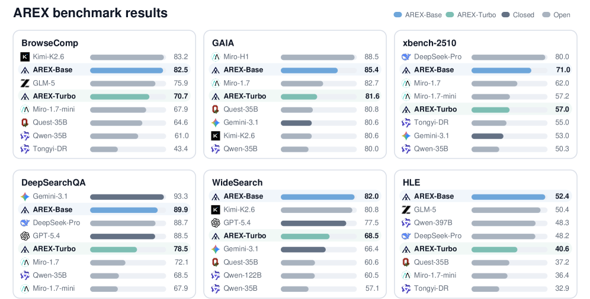
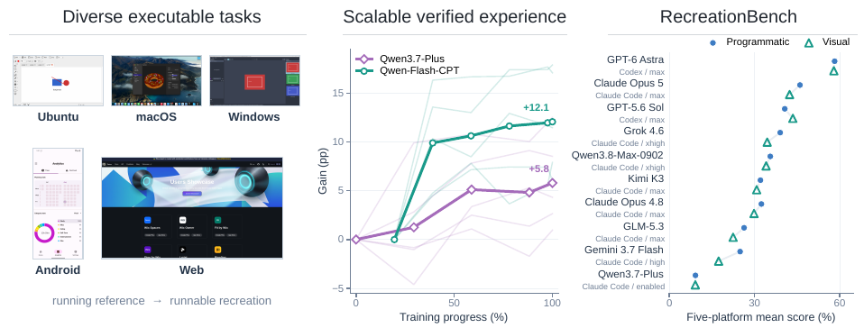

I am a second-year PhD candidate at the State Key Laboratory of CAD&CG,
 Zhejiang University. I earned my B.Eng. in Artificial Intelligence at the
IIAU Lab,
Zhejiang University. I earned my B.Eng. in Artificial Intelligence at the
IIAU Lab,  Dalian University of Technology, in 2025.
Dalian University of Technology, in 2025.
My research centers on agents that act in real environments, in particular Computer-Use Agents that move across GUI, CLI and code. I work on Agentic RL training for these agents, spanning algorithm design and infrastructure. My research goal is to build agents that can reason, learn, and act reliably across previously unseen real-world environments. I am also interested in multimodal intelligence, from generation and understanding to world models and VLA.
Currently a research intern with the
 Qwen Team at Alibaba, working on General
Computer-Use Agents.
Previously at
Qwen Team at Alibaba, working on General
Computer-Use Agents.
Previously at  MSRA.
I'm also a community collaborator at
WebAgentLab,
an open-source community around GUI and Computer-Use Agents.
MSRA.
I'm also a community collaborator at
WebAgentLab,
an open-source community around GUI and Computer-Use Agents.
I'm always open to research collaboration. Feel free to reach out if you'd like to work together.
News
- 2026.09 Released RecreationWorld for training and evaluating hybrid computer-use agents.
- 2026.08 WeaveBench and ST-Lite accepted by EMNLP 2026.
- 2026.08 Started a research internship with the Qwen Team at Alibaba.
- 2026.07 LiteResearcher accepted by COLM 2026.
- 2026.03 Started a research internship at Microsoft Research Asia.
- 2026.02 OmniGen2 accepted by CVPR 2026.
- 2026.01 SAIL and TempFlow-GRPO accepted by ICLR 2026.
- 2025.09 Started my PhD at Zhejiang University.
Research
My work spans three threads. * denotes equal contribution.
Agentic Reinforcement Learning
Training agents to reason and act over long horizons with scalable, stable RL.


AREX: Towards a Recursively Self-Improving Agent for Deep Research
Contributor Tech Report
A recursively self-improving deep research agent that audits its own answer constraint-wise and relaunches targeted research; the 4B and 122B-A10B models lead comparable-scale baselines on BrowseComp, WideSearch and HLE.
Generalist Computer-Use Agents
Agents that operate real desktops across GUI, CLI and code — and how we evaluate them.

WeaveBench: Benchmarking Hybrid-Interface Computer-Use Agents
First Author EMNLP 2026
A long-horizon benchmark of 114 hybrid-interface tasks forcing GUI and CLI/code to cooperate — the best agent reaches only 41.2% success.

ST-Lite: Training-Free KV Cache Compression for Efficient GUI Agents
Co-first EMNLP 2026
A training-free KV cache compression for GUI agents, giving 2.45× decoding speedup and +7.3% success on long-horizon tasks.

RecreationWorld: Scalable and Verifiable Environments for Hybrid Computer-Use Agents
Contributor Tech Report
A five-platform framework for training and evaluating hybrid computer-use agents through software recreation, with verifiable rewards and a 250-task benchmark spanning Ubuntu, macOS, Windows, Android and Web.
Multimodal Generation
Unified multimodal models and RL alignment for generation.

OmniGen2: Towards Instruction-Aligned Multimodal Generation
Core Contributor CVPR 2026 332 Citations · 4.1k GitHub Stars
A unified multimodal generation model; I built the in-context data pipeline and led the progressive Flow-GRPO RL alignment.

TempFlow-GRPO: When Timing Matters for GRPO in Flow Models
Core Contributor ICLR 2026
A temporally-aware RL framework for flow-matching models, using trajectory branching and noise-aware weighting for stabler alignment.

SAIL: Self-Amplified Iterative Learning for Diffusion Model Alignment
Co-first ICLR 2026
A self-amplified iterative framework that aligns diffusion models from minimal seed data, letting the model act as its own teacher.
Talks
- Computer-Use Agents: Recent Advances and Future Directions Heart in the Bay · Computer Use Seminar
- 2026.07 WeaveBench: Benchmarking Hybrid-Interface Computer-Use Agents Hunyuan Frontier Lab
- 2026.07 LiteResearcher: Scalable Agentic RL for Deep Research Agents AgenticAICon 2026
Open Source
LoopX
5.7k stars · 511 forksCore Contributor · Long-Horizon Agent Harness
 #1 on GitHub Trending · Aug 5, 2026
#1 on GitHub Trending · Aug 5, 2026
A durable, governed control plane for long-horizon coding agents across Codex, Claude Code, and other harnesses, supporting academic-grade evaluations and new insights into long-horizon harness design and agent behavior.
Experience
Research Intern · Base Model Team
Hybrid Computer-Use Agents and human–agent co-work: agents that move fluidly across GUI, CLI and code while staying steerable by a human collaborator.
Advisors: Chang Gao, Que Shen
Research Intern · Shanghai AI/ML Group
Full-stack hybrid-interface Computer-Use Agents: VM sandbox infra, fully-async Agentic RL training, and the WeaveBench benchmark.
Advisors: Caihua Shan, Yifan Yang

Research Intern · Agentic RL Team — First Author / Project Lead
Led LiteResearcher, an open-source SOTA 4B deep-research model trained with scalable Agentic RL over a local search world.

Research Intern · VectorSpaceLab — Core Contributor
Core contributor to OmniGen2 (4k★): the in-context data pipeline and progressive Flow-GRPO RL alignment.
Advisors: Zheng Liu, Shitao Xiao
Skills
Education
-
Zhejiang University — PhD in Computer Science, State Key Lab of CAD&CG 2025 – Present
Advised by Prof. Wei Chen -
Dalian University of Technology — BEng in Artificial Intelligence, IIAU Lab 2021 – 2025
Advised by Prof. Huchuan Lu and Prof. Lijun Wang
Honors
- National Silver Award, China International College Students' Innovation Competition (“Internet+”), 2023
- National Scholarship (Top 1%) — Ministry of Education, 2022 & 2024
- Yulan Scholarship (Top 10 university-wide, highest honor) — DUT, 2024
- Outstanding Graduate of Liaoning Province, 2024